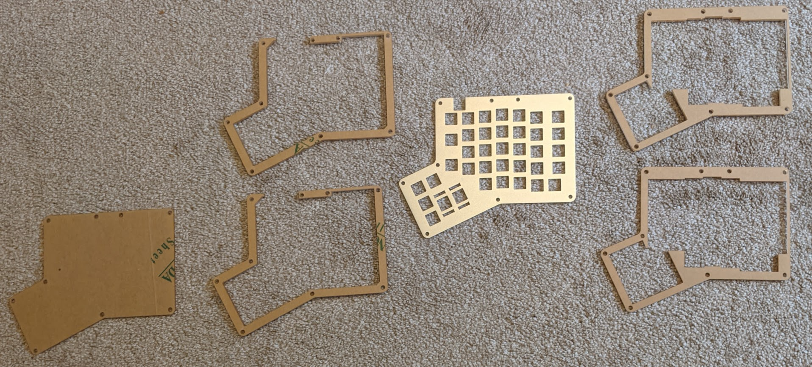
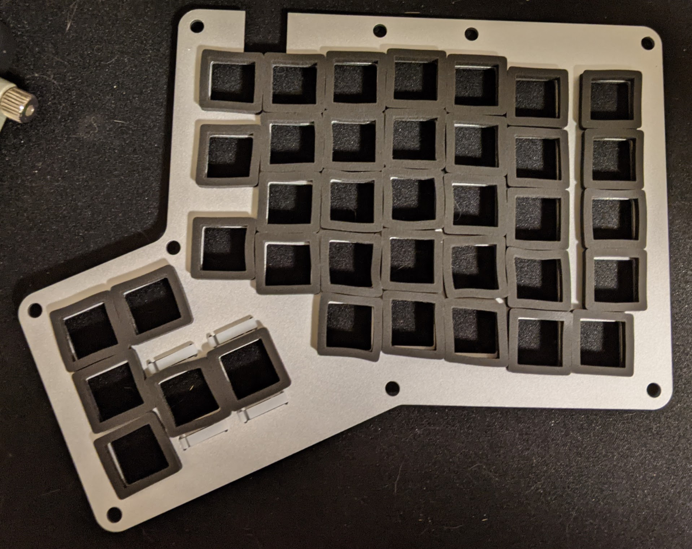
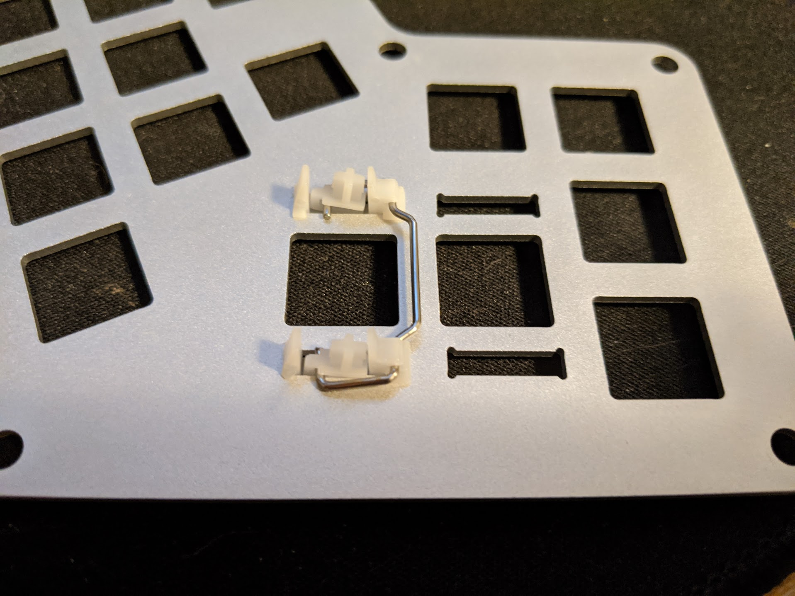
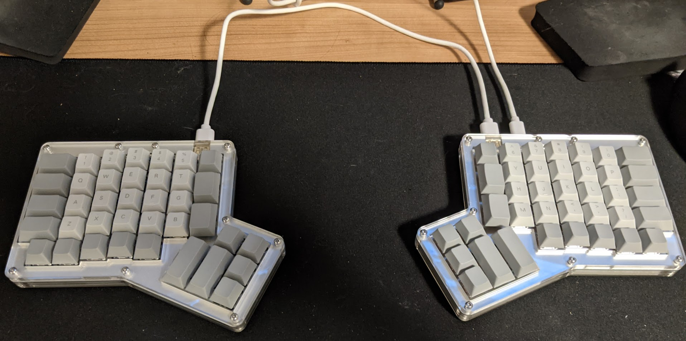

How to Build a Hot Dox
I recently purchased a Hot Dox from Alpaca Keyboards. There are instructions, but I wanted to author my own to call out a few details, as well as include some steps on how to add some foam to reduce typing noise.
1. Lay pieces out, remove tape #
The Hot Dox has the following pieces per side:
- 2 layers of acrylic for the top of the case, above the metal.
- 1 metal piece to hold the keyswitches.
- 2 layers of acrylic for the bottom of the case, below the metal.
- 1 solid piece of acrylic for the actual bottom.
I’ve laid out the pieces side by side. The layers go from the bottom-most on the left, to the top-most on the right:

Before putting the layers together, you should peel off the paper covering the acrylic. I like to remove them as I start assembling, as otherwise dust and other sediments get stuck and it looks ugly in the clear plastic.
2. Optional: add the module foam #
If you want a more silent keyboard, you can reduce the noise from the keyswitches by applying some foam in some of the gaps in the case.
With the Hot Dox, I was able to add some module foam in between the PCB and the metal switch housing. The foam from Kbdfans comes with an adhesive, which I stuck onto the metal plate rather than the PCB.

3. Insert stabilizers #
The Hot Dox comes with keycap stabilizers for the larger key caps. There’s four to build in my set, which are installed into a couple keys on the thumb clusters.
These are costar stabilizers, and I followed this video to figure out how to build and install them.

4. Install Keyswitches #
With the foam and stabilizers installed, it’s time to install the keyswitches. Lay the PCB above the foam that comes with the Hot Dox (as to not apply pressure to the underlying electronics), and layer your metal switch housing on top.
Start by pressing in keyswitches from the corners, and working inward. I found with the foam installed, I had to do some extra work to push in the keyswitches through the metal housing into the PCB. Sometimes I had to gently lift the PCB, and press the PCB and keyswitch together to get the keyswitch to actually go in.

5. Verify Keyswitches #
I forgot to snap a photo, but it’s a good time to verify that the keyswitches are actually connected to the PCB. The photo on the original guide show you what to look for, but basically you’ll see some thin metal pins sticking through on the bottom of the case, in the little black parts that are below every switch slot.
The tiny sliver of the pin metal is a bit hard to see, so I used a flashlight and also compared the filled slots to ones that were empty.
6. Assemble the case #
Once the switches are installed, it’s time to layer the acrylic pieces and the metal/pcb together.
Use the order I mentioned above. The main differentiator between the top and the bottom is the notches for the keycaps that are on the top case, and the large gap for the USB slots on the bottom acrylic.
When installing with the foam, I found that the foam was large enough to make it hard to make the acrylic line up with the holes on the PCB. To deal with that, I lightly opened up the acrylic to go around the foam, then pushed the acrylic back to align the holes as I was installing the screws.
If you do the above, be careful not to stretch the acrylic too far: it’s easy to crack.
7. Install the screws #
Once the case has been layered, the next part is to install the screws. The screw bolts (which are flat at the end) belong on the bottom of the keyboard, while the screws themselves are at the top.
Again, this is a little more difficult when installing with foam due to the foam pushing the acrylic out of alignment. So the screws sometimes have to be pushed at different angles.
And you’re done! #
Once you install the screws, you’re done! You have a fully assembled keyboard.

But you don’t have a fully working Hot Dox yet. the next step is to program it. We’ll cover that in a future post.